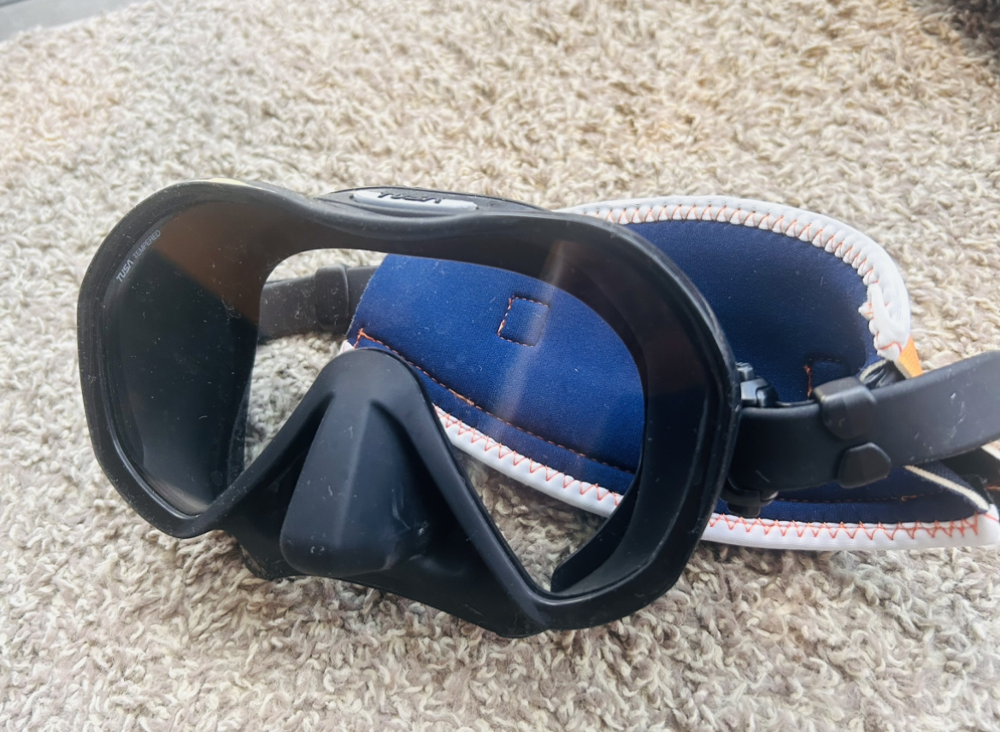

機材紹介
-
- ダイビングを行うに当たって必須となる
全身の保護、保温を目的とする機材。
日焼け防止の役割も担っている。
主にウェットスーツとドライスーツの2種類が存在する。
ダイビングスーツ

- ダイビングを行うに当たって必須となる
-
- 水面で呼吸をするために用いる
パイプ状の道具。
ダイビングでは、水面に浮上してから陸に上がるまでの間、
安定した呼吸を確保するために用いられる。
シュノーケル

- 水面で呼吸をするために用いる
-
- 水中での視界を十分に確保するために必要な道具。
ゴーグル

-
- 砂浜や磯、海中の岩場などから、
手足を保護する役割を担う。
手足の末端から体温を逃がさないはたらきを持つ。
また、海中生物に不用意に触れてしまったときに
大きな怪我に繋がるのを防いでいる。
手袋/ブーツ
- 砂浜や磯、海中の岩場などから、
-
- 水中での推進力を得るために装備する。
より少ない動きで快適に泳ぐことへの手助けになっている。
フィン
- 水中での推進力を得るために装備する。
-
- 水中における唯一の空気の供給源である。
レギュレーターを介して酸素を体内に供給する。
酸素ボンベ
- 水中における唯一の空気の供給源である。
-
- Buoyancy Control Device(浮力調整具)の略称。
水中での浮力を調整するための浮き袋のようなもの。
水中での潜水深度を常に一定に保つために、
空気を任意で出し入れして浮力を調整する。
BCD
- Buoyancy Control Device(浮力調整具)の略称。